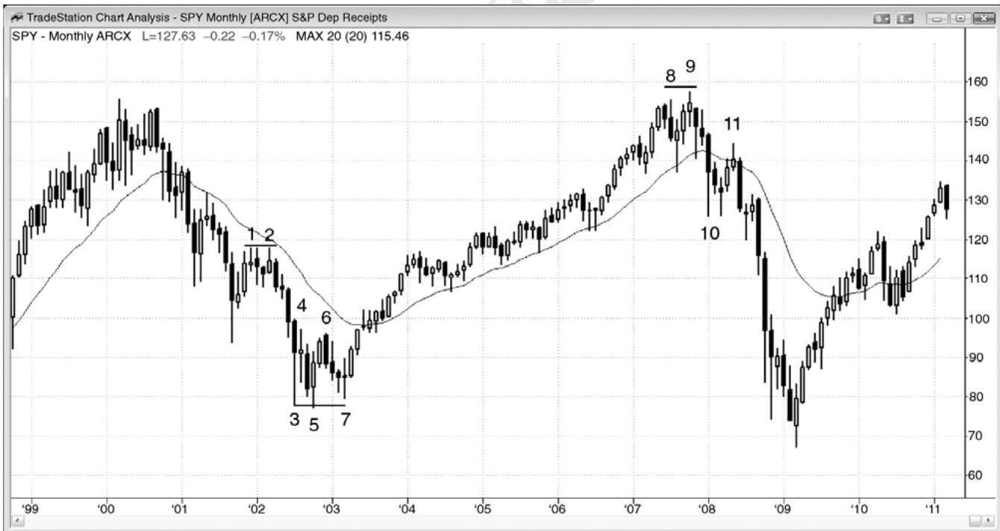
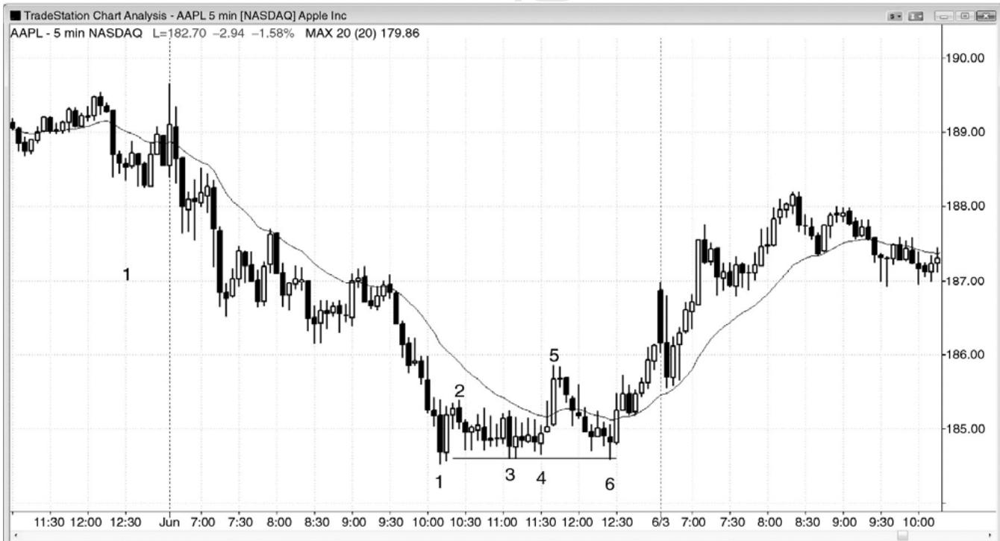
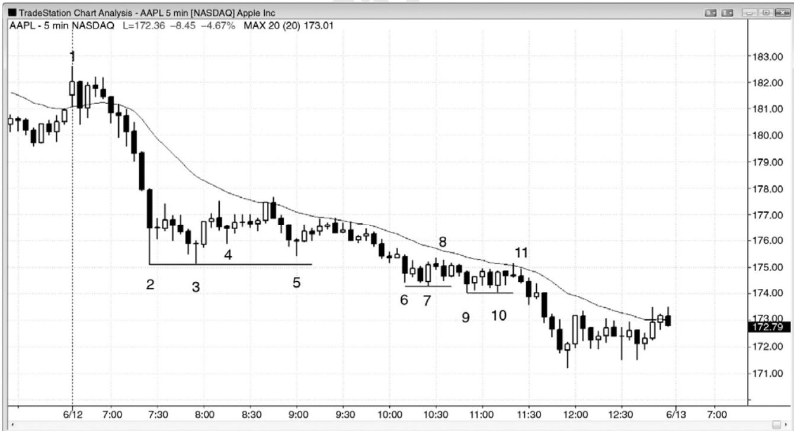
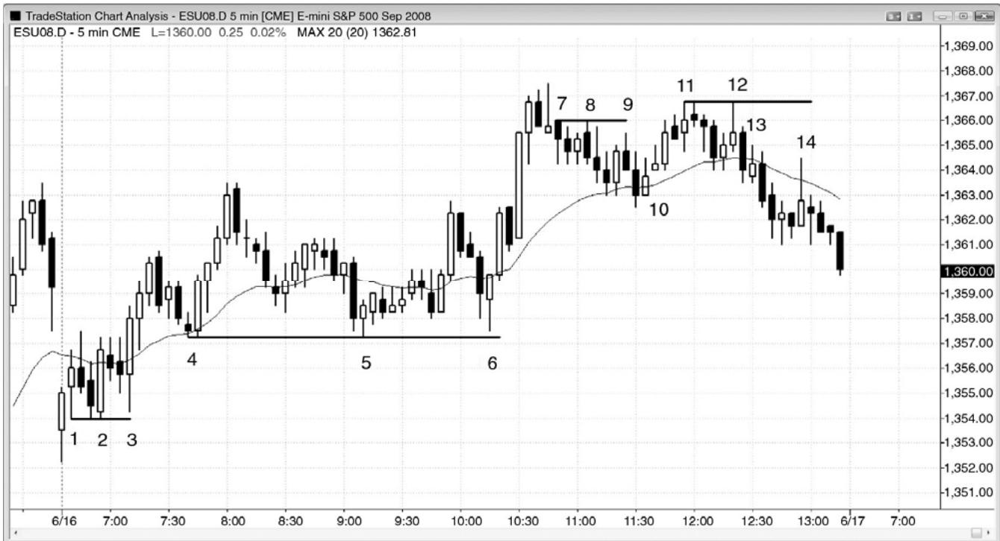

第8章 双重顶和双重底回撤¶
第 8 章 双重顶和双重底回撤
如果市场在下跌后形成一个双重底，在多头趋势开始前，又形成一波更高低点回撤，测试双重底低点，那么这是一个双重底回撤做多架构。该双重底不必非常精确，第二个底常常略低于第一个，有时使得该形态也成为一个头肩底。如果第二个底部距第一个底部较远，那么该底部有可能只是在形成一波两条腿横盘至上涨调整，因此，最好只寻找刮头皮架构，而不是波段架构。双重底（或双重顶）回撤形态可以看作三推底（或三重底或三角形），其中第三次下推没有强到令卖家制造一个新的低点。该形态总是形成于某个支撑位，像空头趋势中的每一波上涨一样。如果从三个底部中第一个底部的上涨足够强，那么交易者们会猜测趋势是否正演变为交易区间，甚至反转进入一轮多头趋势。在交易区间中，每一波下跌运动都是一个多头旗形，每一波上涨运动都是一个空头旗形。如果市场正处于一轮多头趋势的早期阶段，那么每一波下跌运动也是一个多头旗形。无论市场是进入交易区间还是新的多头趋势，第一波反弹之后的下跌都是一个多头旗形，尽管它跌至第一个底部附近。离开双重底的反弹是该多头旗形的突破。离开双重底的上涨运动之后的回撤（第三波下跌），也是一个多头旗形，无论它是在双重底上方结束，形成一个双重底回撤（或一个三角形），是在双重底价位结束，形成一个三重底，还是跌至双重底下方，向上反转，形成一个失败的双重底向下突破（实际上是一种最终旗形反转）。它也是第二个多头旗形之后的一波回撤，所以离开第三次下推之后的反弹是向上突破第二个多头旗形之后的突破回撤。第三次下推在哪里结束并不重要，整个形态看起来是否是一个三重底、三角形、头肩底、最终旗形或双重底回撤也不重要，因为意义是相同的。第三次向上反转形成一个三推下跌反转形态，交易者们需要寻找机会做多。当市场形成一波双重底回撤时，如果外形不错，而且第三个底部的多头反转棒很强，特别地，如果最后一条很强，那么该形态就是最可靠的买进架构之一。
从第二个底部的上涨通常是一次突破，尽管它可能只持续一两棒。因此，回撤是一波突破回撤，突破回撤是最可靠的架构之一。还可认为它是两次尝试超越前一极点（常常是低点2）而失败，两次失败的尝试通常引起反转。有些技术分析师认为，三重底和三重顶总是失败，总是成为延续形态，但是他们要求三个极点精确地位于同一价位。如果使用那样严格的定义，那么该形态非常罕见，所以不值得考虑。另外，告诉市场你不允许它做什么，那是狂妄自大，自大总是会令你大把亏损，因为它是市场，不是你说要发生什么就发生什么。通过使用宽松的定义，交易者们会赚到更多的钱。当某种走势接近某个可靠的形态时，市场运动的方式很可能类似于那个可靠形态。
这是一种反转形态，不是一种延续形态，比如双重底多头旗形。两者都是做多入场架构，但是一个出现在趋势开头（反转形态），另一个出现在确定的趋势中（延续形态），或者至少出现在一条很强的腿形之后。
类似地，如果多头趋势中出现一个双重顶，然后一波回撤，接近（双重顶）高点，那么这个双重顶回撤便一个不错的做空架构。同样地，三推顶部的形态并不重要，因为意义是相同的。如果信号棒很强，也就是说卖压很强，那么无论它看起来是一个三重顶、一个三角形、一个头肩顶、一个最终旗形、还是一个双重顶回撤，它都是一个卖出架构。
有时，在同一交易区间内会形成一个双重顶和一个双重底。结果通常是一个三角形，也就意味着市场处于突破模式。市场倾向于向区间中部运动，然后测试顶部或底部，第三推确定了三角形形态。如果区间足够大，那么交易者们可以在市场向下反转时做空头刮头皮，在市场向上反转时做多头刮头皮。如果架构不错，那么胜率大约为 60%，回报至少与风险一般大。如果交易区间太紧，那么交易者们可以选择做多头或空头波段，或者等待突破。如果突破很强，那么交易就是在突破方向，因为回报至少与风险一样大的概率常常为 70%或更高。如果突破失败，就在反向交易。

P128
如图 8.1 所示，SPY 月线图在外包棒棒 7 形成一个双重底回撤买进架构，棒 7 超越了前一棒高点 1 个跳动。如果之前是一条不错的信号棒，那么外包上涨棒可以是可靠的入场棒，比如此处。其他交易者可以会在那条外包上涨棒的高点上方、在棒 7 后面的多头趋势棒的收盘价、在那条多头趋势棒的高点上方、以及在下一条多头趋势的收盘价买进。对于很多交易者来说，第二条多头趋势棒确认了新的趋势。在一波上涨运动的开始，在强多头趋势棒的高点上方买进是一种可靠的交易，这一点从随后的强多头趋势棒便可看出。
棒 5 略低于棒 3，但这是很常见的情况，实际上，在双重底回撤买进形态中，这种形态更为可取。棒 6 突破了双重底，棒 7 是回撤，成功测试突破型交易者们的决心。很多交易者把这些看作三角形。突破回撤是最可靠的架构之一。突破回撤常常是头肩形态。
棒11是棒8和棒9双重顶之后的回撤。有些交易者把它看作一个更低高点重要趋势反转，均线处的一个低点2，或者向下突破双重顶后的一波回撤。
棒 1 和棒 2 形成一个双重顶空头旗形（一种延续形态，不是一个双重顶，双重顶是多头趋势终点的反转形态）。空头趋势中的双重底总是低点 2 卖出架构，因为它是两次上推。多头两次尝试令趋势反转并失败，至少几棒之内会在一旁观望。这使得买家缺乏，增加了下跌的速度和幅度，市场快速运动至某个支撑位，在那里可能找到买家。

有时，空头旗形可能成为一个双重底回撤买进架构。图 8.2 中，棒 1 处的双棒反转位于当日第二条大型下跌腿的终点处，所以可能是一个反转架构。不过，双棒反转并不足以作为在一条紧凑空头通道底部买进的理由。虽然截止棒 2 的上涨幅度很小，涨势很弱，但是棒 3和棒 4 均未能跌破当日低点，所以它们形成一个双重底多头旗形。有些交易者把棒 3 看作一个楔形空头旗形的终点，头两次上推是倒数第 4 棒和第 6 棒。这使得棒 4 成为一个小型突破回撤买进架构，棒 4 之前两棒形成的多头旗形被小幅突破，然后回撤。另有交易者把棒 3 看作空头旗形的突破，但是突破没有坚持到底，那使得交易者们猜测旗形是否是最终旗形，市场是否正在向上反转。
P129
棒 6 准确测试棒 3 低点，未能继续下跌（或者跌破棒 1 低点），所以这是一个广泛意义上的双重底多头旗形，棒3（或棒3和棒 4）形成第一个底部。这也称作累积。机构正在防御棒1 低点，而不是猎杀止损，表明它们认为市场即将上涨。
棒 5 是一条均线缺口棒，那常常为趋势反转提供必要的逆势动能。它突破了一条重要趋势线。棒 6 是对棒 1 趋势极点的一次更高低点测试，是棒 5 尖峰之后是一波突破回撤。棒 6也是一个更高低点重要趋势反转，从棒 5 开始形成三次下推，也是一个单棒最终旗形反转（始于两棒之前）。

有些双重底回撤看起来不强，通常意味着它们是空头旗形的一部分，而不是反转形态。图 8.3 中，棒 4 看起来像是一个双重底回撤做多架构，但是，在一轮非常强的空头趋势中，棒 3 低点比棒 2 低点高出了 5 美分。这一略高低点通常会否定该形态，市场很可能形成一波两条腿的空头反弹，而不是一轮新的多头趋势。另外，强趋势中的第一波回撤（不管棒2之后形成多么微小的反弹）几乎总是形成顺势架构，所以在此处寻找底部是不明智的。然而，如果交易者选择这笔交易，那么市场从做多入场点上涨了$1.00 还多。棒2、3和4带有很长的尾线，市场仍然处于开盘后的 90 分钟内，所以很可能形成开盘反转，那是一笔合理的交易。最聪明的交易者们可能会在市场测试均线时做空，那次测试表现为一个三角形（有三次上推，第一次在棒 2 之后第二棒，第二次是在棒 4 前一棒）。相反地，如果你做多头刮头皮，那么在思想上很难快速切换到做空状态。
棒8是一个双重底回撤架构，棒7比棒6低点低了13美分，但是入场一直未被触发（棒8后一棒未能超越棒8高点）。另外，如果之前没有强趋势线突破，那么在强空头趋势中捕捉底部不是一种好策略。市场处于紧凑的空头通道内，通道的持续时间通常比看起来要长得多。如果首先出现一个强多头突破，然后回撤，或者形成某种类型的反转，比如从结束于棒 11 的紧凑交易区间开始的下跌尖峰之后的最终旗形反转尝试，那么交易者们只应准备买进。即便那样，在先前没有反弹的情况下，任何反转都更可能引出交易区间，而不是多头趋势，因此，任何做多架构只可用来刮头皮。
棒 11 是形成底部的第三次尝试。棒 10 低点高于棒 9 低点 2 美分。在双重底买进的交易者们可能会离场，或者他们会在均线处的低点2棒11处反转做空。经验丰富的交易者们不会在那个疲弱的双重底买进；相反地，他们会等待，预期它失败，而且会在棒 11 处的低点 2 做空。
在当天结束时，出现一个小型双重底多头旗形，然后是一条内包棒。由于内包棒是一种暂停，是一种回撤，所以那条内包棒完成了一个小型双重底回撤买进架构。
P130
棒 2 和棒 3 形成一个双重底，但是在那段交易区间内还有一个双重底。每当一段交易区间内同时出现一个双重底和一个双重顶时，市场通常会向中部运动，形成一个三角形，比如在棒 4。交易区间继续横盘运动，不出所料，最终在之前的趋势方向上突破。
图 8.4 双重底和双重顶回撤

如图 8.4 所示，电子迷你中既有双重底回撤反转，也有双重顶回撤反转。棒 1 和棒 2 形成一个双重底，尽管第一眼看上去棒 1 可能轻易被忽略。入场棒下方存在保护性止损，常常会被测试，比如在棒 2，两次下跌到达同一价位形成一个双重底，尽管第一个不是一个波段低点。由于棒 1 的下尾线很长，所以几乎可以肯定存在一个 1 分钟更高低点（事实如此）。棒3 是测试双重底的一波深幅回撤，所以它是第二次尝试猎杀止损。市场甚至未能靠近棒 2 第一次尝试的低点，空头便撤出，多头控制市场。有些交易者把棒 2 和棒 3 看作一个双重底多头旗形，有些交易者把它们看作一个三重底多头旗形或者一个双重底回撤。无论你认为哪个特征更加重要，都没有关系，因为它们都是买进架构。
在这个趋势型交易区间日，棒 4 和棒 5 构成一个双重底多头旗形。这个双重底被棒 6 回撤测试，形成一个大型双重底回撤。你也可以称之为三重底，但那一术语并不会给交易增加任何助益，所以不值得使用。交易者可能把它看作一个双重底重要趋势反转，发生于在棒 6结束的小型空头趋势（所有多头旗形都是小型空头趋势）之后。
棒 7 类似于棒 1，也是一条入场棒。它与棒 8 构成一个微型双重顶。另外，棒 7 之前的双棒反转是一次上推，棒 7 前面的十字星棒是第二次上推；它们一起构成一个双重顶。你认为哪个形态比较重要，并没有关系，因为它们都是顶部形态。你所需要的是知道市场正在尝试向下反转。
棒 8 尝试猎杀空头入场棒棒 7 上方的保护性止损，但以失败告终。棒 9 是二次尝试猎杀止损，在一个更低的价位失败，形成一个双重顶回撤做空架构，止损入场位于棒 9 低点下方
1 个跳动处。这个做空架构形成一个五跳动失败，在均线处形成一个很好的双棒反转，可以使用止损单入场做多。棒10是入场棒。这个楔形回撤多头旗形测试棒4到棒6交易区间的顶部，是一个突破测试。
棒 11 和棒 12 形成一个双重顶空头旗形做空架构，提醒交易者们寻找随后形成的双重顶回撤做空架构。棒13多头趋势棒尝试反弹，测试双重顶，并且尝试形成一个高点2。
棒 14 是一个更低高点回撤，在均线处失败，也是一个双重顶回撤做空架构。
P131